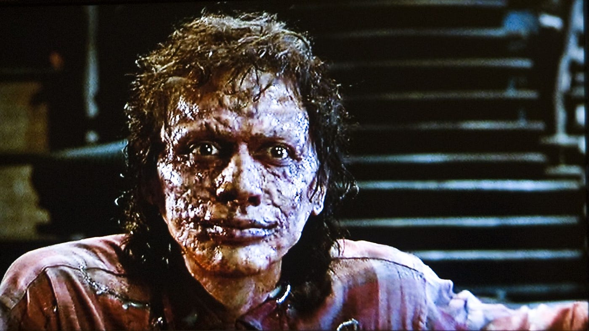
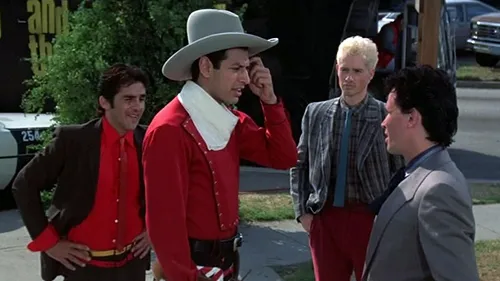
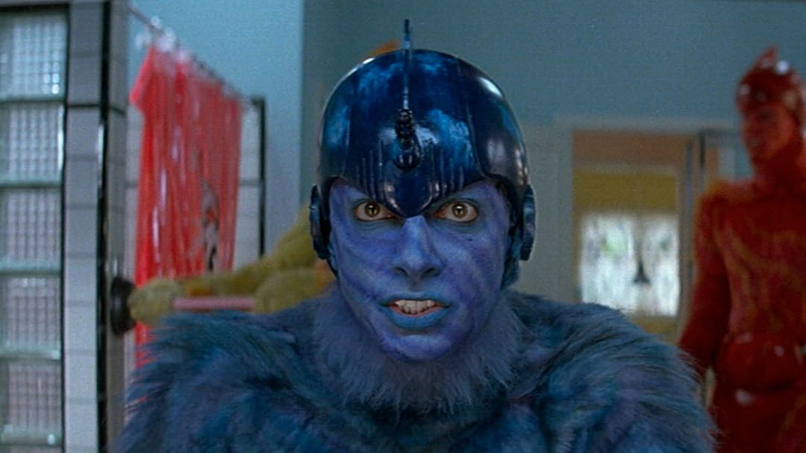

Pictures of Jeff Goldblum in Sci-Fi Movies
Invasion of the Body Snatchers
Asteroid City
The Fly
Jurassic Park
The Adventures of Buckaroo Banzai
Earth Girls are Easy
Independence Day
Thor: Ragnarok
First, who is Jeff Goldblum?
Jeff Goldblum is an actor, musician, and all-around ccool guy. Born on Oct. 22, 1952, Goldblum grew up in Pennsylvania and always showed an interest in show business. He moved to New York City at 17 years old, where he began his now legendery career in acting. You may have seen him in hit movies such as "Jurassic Park," "The Fly," or "The Grand Budapest Hotel." You may not have seen him in lesser movies, such as "The Adventures of Buckaroo Banzai Across the 8th Dimension," "Earth Girls are Easy," or my personal least-favorite, "Independence Day."
Invasion of the Body Snatchers

Did you know "Invasion of the Body Snatchers" has been made four times?
Asteroid City

Eh. Unspectacular.
The Fly

Ewwwwww!!!!! Sorry.
Jurassic Park
Classic. Yeah, I could've put the picture of him shirtless, but this is a school project. It has to be tasteful.
The Adventures of Buckaroo Banzai Across the 8th Dimension

He plays a cowboy from New Jersey in this cult classic B-movie. Yeah, they call him New Jersey.
Earth Girls are Easy

He's blue!
Independence Day

Whatever. I didn't really like this movie. Far too patriotic.
Thor: Ragnarok

Hey, look! He's older in this one. Bet you didn't expect that, huh?